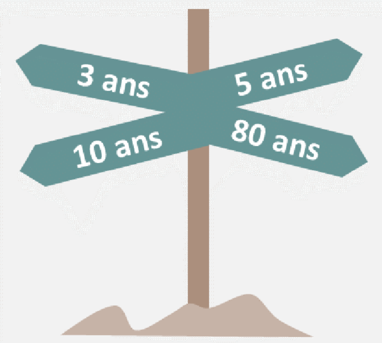

Protection et archivage des données⚓︎
Sources
Compétences
B3.2 Préserver l'identité numérique de l’organisation
Protection et archivage des données : principes et techniques.
1. Définition⚓︎
Ue archive est une somme de documents classéss afin d'être conservés durablement. La procédure d'archivage peut être effectuée via des supports papiers ou numériques. Il ne faut pas confondre l'archivage et la sauvegarde.
| Sauvegarde | Archivage |
|---|---|
| Duplication de données en cours de traitement par le système d'information, en vue de pouvoir les restaurer | Copies d'anciennes données qui ne sont plus en cours de traitement en vue de leur conservation |
2. L'archivage des données à caractères personnel⚓︎

Définition d'une donnée à caractère personnel
Une donnée à caractère personnel est définie par le RGPD (Règlement Général sur la Protection des Données) comme :
Toute information se rapportant à une personne physique identifiée ou identifiable.
👉 Une personne est identifiable lorsqu’elle peut être reconnue, directement ou indirectement, notamment par :
- son nom,
- son numéro d’identification (N° de sécurité sociale, N° client…),
- des données de localisation (adresse postale, IP, géolocalisation…),
- un ou plusieurs éléments propres à son identité physique, physiologique, génétique, psychique, économique, culturelle ou sociale.
Exemples :
- Nom, prénom, adresse e-mail nominative.
- Numéro de téléphone, plaque d’immatriculation.
- Adresse IP d’un utilisateur connecté.
- Données de santé ou données biométriques (empreintes digitales, reconnaissance faciale).
⚠️ Attention : une donnée n’a pas besoin d’identifier une personne directement pour être personnelle. Un identifiant pseudonymisé ou croisé avec d’autres informations peut suffire à rendre la personne identifiable.
Données personnelles VS Données sensibles
| Catégorie | Définition | Exemples | Règles de traitement |
|---|---|---|---|
| Donnée personnelle | Toute information permettant d’identifier directement ou indirectement une personne physique. | - Nom, prénom - Adresse postale - Adresse e-mail (ex. jean.dupont@société.fr) - Numéro de téléphone - Adresse IP |
Doit être collectée pour une finalité précise, stockée de façon sécurisée, et limitée dans le temps. |
| Donnée sensible (art. 9 RGPD) | Catégorie particulière de données personnelles révélant des informations intimes ou protégées. Leur traitement est interdit par principe, sauf exceptions (consentement explicite, intérêt public, santé…). | - Données médicales (maladies, traitements) - Orientation sexuelle - Croyances religieuses ou opinions politiques - Données biométriques (empreintes, ADN) - Situation de handicap |
Nécessite un niveau de protection renforcé (chiffrement, anonymisation, accès restreint). Traitement soumis à conditions strictes (consentement explicite, loi, intérêt public majeur). |
⚠️ Dans tous les cas, une donnée sensible est toujours une donnée personnelle, mais toutes les données personnelles ne sont pas sensibles.
Application Données personnelles VS Données sensibles
Complétez le tableau suivant :
| Exemple | Donnée personnelle ? (Oui/Non) | Donnée sensible ? (Oui/Non) | Pourquoi ? |
|---|---|---|---|
| Nom et prénom | |||
| Adresse postale | |||
| Antécédents médicaux | |||
| Mention de handicap | |||
| Orientation sexuelle | |||
| Adresse IP | |||
| Exemple | Donnée personnelle ? | Donnée sensible ? | Pourquoi ? |
|---|---|---|---|
| Nom et prénom | ✅ Oui | ❌ Non | Permet d’identifier directement une personne mais pas sensible au sens du RGPD. |
| Adresse postale | ✅ Oui | ❌ Non | Permet d’identifier ou de localiser une personne. |
| Antécédents médicaux | ✅ Oui | ✅ Oui | C’est une donnée de santé → catégorie sensible. |
| Mention de handicap | ✅ Oui | ✅ Oui | Santé / situation médicale → donnée sensible. |
| Orientation sexuelle | ✅ Oui | ✅ Oui | Vie sexuelle = donnée sensible (RGPD art. 9). |
| Adresse IP | ✅ Oui | ❌ Non | Identifie indirectement une personne mais pas sensible. |
La CNIL définit trois phases successives dans le cycle de conservation des données de l'organisation :
| Etape | Temps |
|---|---|
| Base Active | Base de données en cours d'utilisation. Pendant toute la durée des traitements des données, celles-ci doivent faire l'objet de sauvegardes régulières |
| Archivage intermédiaire | Les données issues des transactions réalisées avec des cartes bancaires doivent être conservés pendant une durée de 13 mois en cas de contestations d'un client (article L. 133-24 du code monétaire et financier) |
| Archivage définitif | L'intérêt public peut parfois justifier que certaines données ne fassent pas l'objet d'aucune destruction. Ces archives sont gérés par le service des archives territorialement compétent (conditions du livre II du code du patrimoine |
3. Les techniques de protection des données en entreprises⚓︎
Quelque soit le type d'archivage effectué, l'administrateur réseau doit mettre en oeuvre les mesures techniques et d'organisation appropriées pour protéger les données archivées contre la perte accidentelle, l'altération, la diffusion ou l'accès non autorisé.
Ces mesures doivent assurer un niveau de sécurité correspondant aux risques préentés. Le non-respect de cette obligation de securité est sanctionné par l'article 226-17 du code pénal qui prévoit une peine de 5 ans d'emprisonnement et de 300 000 euros d'amendes.

Lews techniques indiquées ci-dessous peuvent être utilisées afin de protéger les données :
| Eléments à protéger | Techniques de protection |
|---|---|
| Protection physique des locaux | Présence d'un digicode, climatisation, protection incendie, séparation des la salle d'archivage des autres salles |
| Gestion des habiliations | Seules les personnes habilitées ont accès aux archives. Il convient donc de recencer ces personnes et de limiter leurs droits d'accès au périmètres de consultation autorisé. |
| Traçabilité | Toutes consultations des archives doit faire l'objet d'une enreigitrement automatisé (date, heure, nom de la personne doivent être notés). Il ne doit pass exister de compte unique partagé pour accéder aux supports d'archivage sur les serveurs. |
| Types de supports numériques utilisés | La CNIL déconseille d'utiliser des CD et des DVD inscriptiblescar leur durées de vie dépasse rarement les 4 ou 5 ans. Utiliser plutôt des disques durs ou des bandes magnétiques (cassette). |
| Accessibilité | Classement des archives ergonomiques pour répondre rapidement à une demande d'accès |
| Condidentialité | Chiffrement des archives requis si elles contiennent des informations confidentielles. |
| Taille des archives | Compression des archives pour limiter la place occupée sur les supports informatiques. |
| Risques de pertes | Copies en double des archives. conserver la copie dans un endroit différent (règle des 3-2-1) |
4. La durée de conservation des archives⚓︎
Au terme de la réalisation du traitement, les données doivent être effacées, archivées, ou faire l'objet d'un processus d'anonymisation. L'anonymisation consiste à rendre invisible le nom d'un utilisateur concerné par une connexion. Par exemple, lorsqu'un administrateur non habilité consultes les journaux système, il ne voit pas le nom de l'utilisateur à l'origine de la connexion.
Les données archivées ne doivent par être conservées que le temps nécessaire à l'accomplissement de l'objectif poursuivi.

Les durées d'archivage dépendent des types de données concernées :
- Données relatives à la gestion du personnel : 5 ans à compter de la date à laquelle le salarié a quitté l'entreprise (article L. 1221-26 du code du travail)
- Bulletins de paie : 5 ans (article L. 3243-4 du code du travail)
- Documents comptables : 10 ans (article L. 123.22 du code du commerce)
- Documents fiscaux : 6 ans (article L. 102 B du livre des procédures fiscales)
- Données de trafic collectées pour les besoins de recherche, de constation et de poursuites des infractions pénales : 1 an à compter du jour d'enregistrement.
5. QCM ✅⚓︎
Protection et archivage des données
Q1. Quelle est la différence principale entre une sauvegarde et un archivage ?
a) La sauvegarde conserve les données à long terme, l’archivage à court terme
b) La sauvegarde permet la restauration rapide, l’archivage la conservation durable
c) La sauvegarde est uniquement sur papier, l’archivage uniquement numérique
d) La sauvegarde et l’archivage sont équivalents
Q2. Une donnée à caractère personnel est :
a) Toute information sur une organisation
b) Toute information sur une personne physique identifiée ou identifiable
c) Une donnée de santé uniquement
d) Une donnée sensible uniquement
Q3. Parmi les exemples suivants, laquelle est une donnée sensible au sens du RGPD ?
a) Adresse IP
b) Adresse postale
c) Orientation sexuelle
d) Numéro de téléphone
Q4. Selon la CNIL, combien de temps doivent être conservés les documents comptables ?
a) 3 ans
b) 5 ans
c) 6 ans
d) 10 ans
Q5. Quelle technique est déconseillée pour l’archivage numérique à long terme ?
a) L’utilisation de bandes magnétiques
b) L’utilisation de disques durs
c) L’utilisation de CD/DVD inscriptibles
d) L’utilisation de solutions cloud spécialisées
Q6. Quelle règle de sauvegarde/archivage recommande de conserver 3 copies sur 2 supports différents, dont 1 hors site ?
a) La règle du 2-1-0
b) La règle du 3-2-1
c) La règle du 5-5-5
d) La règle du 1-2-3
Q1. Quelle est la différence principale entre une sauvegarde et un archivage ?
b) La sauvegarde permet la restauration rapide, l’archivage la conservation durable ✅
La sauvegarde sert à restituer rapidement des données en cas d’incident, alors que l’archivage a pour but la conservation durable de données qui ne sont plus utilisées au quotidien
Q2. Une donnée à caractère personnel est :
b) Toute information sur une personne physique identifiée ou identifiable✅
Le RGPD définit une donnée personnelle comme « toute information se rapportant à une personne physique identifiée ou identifiable » (ex. nom, IP, adresse)
Q3. Parmi les exemples suivants, laquelle est une donnée sensible au sens du RGPD ?
c) Orientation sexuelle✅
L’orientation sexuelle est explicitement citée comme donnée sensible dans l’article 9 du RGPD. Une donnée sensible est toujours une donnée personnelle, mais avec un régime de protection renforcé.
Q4. Selon la CNIL, combien de temps doivent être conservés les documents comptables ?
d) 10 ans✅
Les documents comptables doivent être conservés 10 ans (article L. 123.22 du code du commerce)
Q5. Quelle technique est déconseillée pour l’archivage numérique à long terme ?
c) L’utilisation de CD/DVD inscriptibles✅
Les CD/DVD inscriptibles sont déconseillés car leur durée de vie dépasse rarement 4 ou 5 ans. Mieux vaut utiliser des disques durs, bandes magnétiques ou solutions cloud spécialisées
Q6. Quelle règle de sauvegarde/archivage recommande de conserver 3 copies sur 2 supports différents, dont 1 hors site ?
b) La règle du 3-2-1✅
La règle du 3-2-1 impose 3 copies des données, sur 2 supports différents, dont 1 copie hors site. C’est une bonne pratique de sécurité pour limiter le risque de perte totale